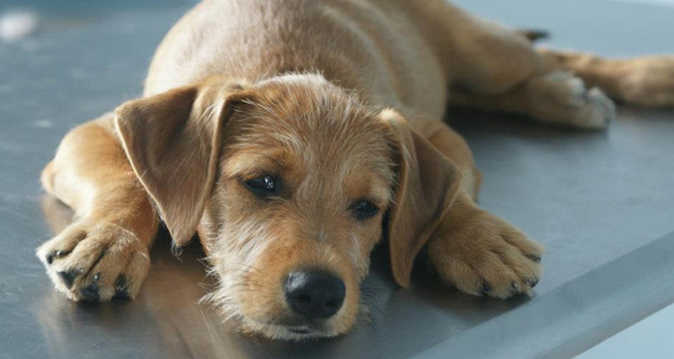

Fundación Esperanza Animal
Somos un refugio privado, con capacidad de albergar hasta 200 perros, siendo la mayoría victimas
de maltrato animal, edad avanzada o enfermedades que requieran de atención especial.
El refugio, situado en Tibás, sirve a todo el Valle Central y provee comida, protección, atención
médica, y sobre todo una nutrición adecuada.
Los tratamientos médicos incluyen cirugías costosas, exámenes de laboratorio, medicamentos, y también atención de
seguimiento. Una vez que los animales están sanos; son desparasitados, vacunados, castrados, se les implanta un
microchip para su debida identificación y también se les entrena para ser animales sociables. De esta forma, están
listos para ser adoptados. Se estima que entre 30-35 animales encuentran hogares permanentes por medio de eventos de
adopción que se llevan acabo semanalmente y publicaciones en las redes sociales.
La fundadora y directora Adriana Borbon Carvajal cree que vale la pena salvar la vida de todo perro y gato, y que todo animal merece una buena calidad de vida. Animales de Asis es una
asociación sin fines de lucro financiado exclusivamente por donaciones.